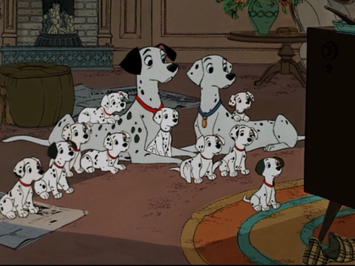

Just a movie after "Lady and the Tramp" released ("Sleeping Beauty" released in between), we got another dog-focused animated film in 1961, with "101 Dalmatians" (or "One Hundred and One Dalmatians" in full English). It had a lower budget than normal, and used some new techniques (for better or for worse), but is still one of the most fun of Disney's movies, and has long been a personal favorite. The movie is set in modern day (1960's) London, England, a timely setting since Britain's music and fashion scene was very trendy at the time. We start with Pongo, a dalmation dog, and his "pet," the human song-writer Roger. The two are bachelors, and with a bit of help from Pongo, they both meet and marry another pair, Anita and her dalmation Perdita. Later, the dogs have puppies, 15 in just one litter! But Cruella de Vil (whom Perdita mispronounces as "that Devil woman"), an old schoolmate of Anita's, has been making frequent visits, and suddenly offers to buy the puppies for unknown reasons (while also admiring her new fur coat, and being particularly entranced with the dalmation's spots). They refuse to sell, and not long after, Cruela's lackeys, Horace and Jasper, sneak in and steal the puppies away. Of course, the humans notify the police, but Pongo and Perdita don't wait around, and notify their own dog network across the country to search for them, and ultimately rescue them (the original 15, plus nearly a hundred more that were collected from every pet shop in town).As a child, and even more as an adult, there's so much in "101 Dalmatians" ' plot that's fun and engaging. The idea that dogs see their humans as their "pets," and have their own network of police and alert communications are a novel change from "Lady and the Tramp," and we're introduced to a series of helpful animals (mostly on nearby farms), each with fun designs and voices. When Pongo and Perdita finally get a clue of their location, they're quick and brave to act, representing one of best Dad-and-Mom pairs in Disney cannon. But the rescue is a team effort by many heroes. This doesn't take away that this is an exciting thriller with real stakes. Cruella is one of the most memorable Disney villains, a boney-figure sporting a massive white coat and a cackling laugh. Her intentions aren't as harsh as some past villains, but the thought of killing cute puppies just to use their furs as a coat is pretty dark. And Horace and Jasper both serve as Disney's best comic relief as well as scary foes. It's never certain that the parents will find their puppies in time, or that the puppies will escape or hide themselves in the De Vil manor. Even if they escape, how would they travel all the way back in heavy snow? It's a harrowing journey, but it's so much fun to see the dogs outwit the villains again and again. At this point, Disney acknowledged that animation was too expensive, and box office returns too uncertain. "101 Dalmatians" would go back to the square aspect ratio instead of the wider Cinemascope ratio from its recent movies, and was the first to use Xerox photography, scanning and printing to reduce costs in the workflow of transferring drawings to cels. This was the first of an era of Disney movies that had a scratchier outline to its characters due to the technology, a style I personally like. But there are other minor issues from the limitations: some scenes with camera pans and zooms look more choppy than other movies, which hides well on VHS, but not as well in HD on a big screen.Despite the budget and production quality, "101" has a charming and more modern pop-art sensibility, immediately seen in its playful and jazzy opening credits (which are usually static and dull). And believe it or not, nearly all of the puppies have unique personalities that make them possible to point out (or at least the main 15). This isn't a musical, and there's really only one song (Roger's "Cruella de Vil" jingle), but the classical score is fun and playful to match the spirit of the dogs. And the acting and writing is fantastic throughout from everyone, a lot of British-sounding accents to match the sense of place. "101 Dalmatians" is a particularly beloved Disney adventure. Despite lower production values, an effective style and story elevate it beyond simply "a movie for dog lovers." It's been referenced and remade multiple times by Disney, but nothing has outdone the charm of the original.
- "Ani" More reviews can be found at : https://2danicritic.github.io/ Next review: review_101_Dalmations